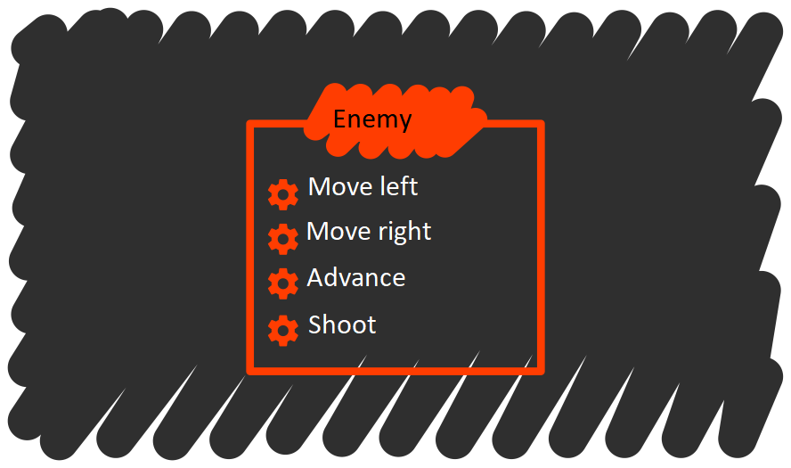
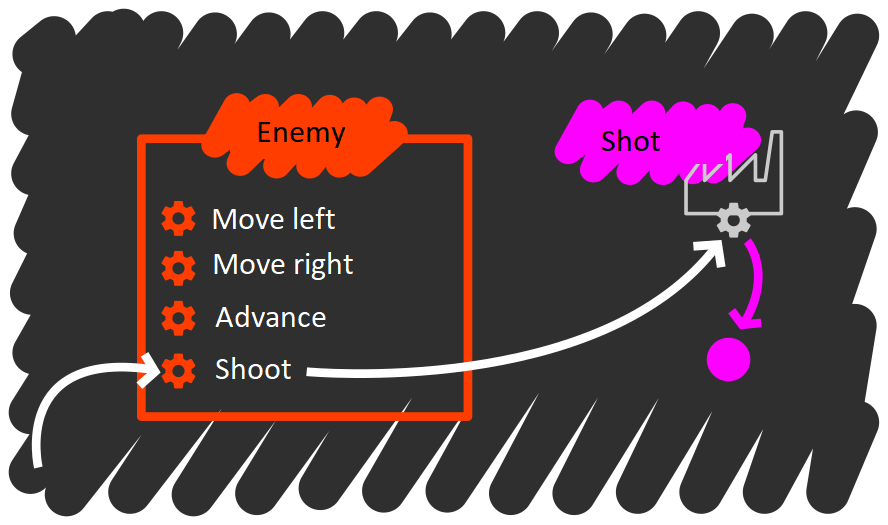
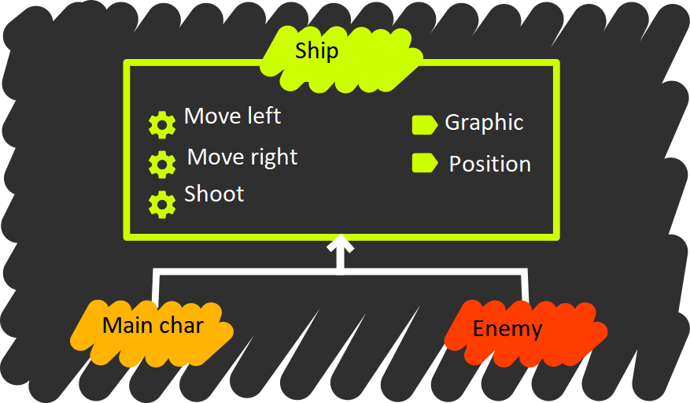
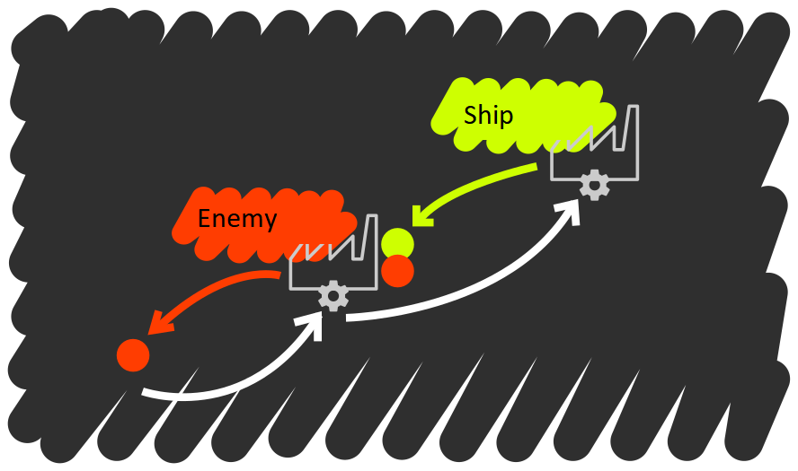

The JavaScript data model
Knowing a programming language basically means that we know its syntax, data model, execution model, and idioms.
Throughout this lesson, you will code into JavaScript what you learned in the prior lesson.
Not all languages allow a 1:1 translation of the concepts we have included in the model. For instance, JavaScript does not feature any mechanisms that allow for the creation of new types, but it does feature other mechanisms that allow for the implementation of a similar functionality.
Experimenting with JavaScript
You are going to be experimenting with JavaScript, so you will need a quick way of inspecting expressions and obtaining feedback on what you are doing. The best way is to use the Node console. For instance:
sh
$ node --use_strict
The option --use_strict enables JavaScript's strict mode, which simplifies some aspects of the language. Strict mode cuts back on some features, but its benefits outweigh its drawbacks.
Now you can try to insert some expressions:
sh
> 40 + 2
42
> var point = { x: 1, y: 1 };
undefined
> point
{ x: 1, y: 1 }
> point.x
1
In order to clear the screen, press ctrl+l. To exit Node, press ctrl+c twice in succession. If Node seems to be unresponsive while typing an expression, press ctrl+c once to cancel the expression.
If you would rather not put up with the Node console, you can always write a program and use console.log() in order to display expressions on screen.
// in file test.js
console.log(40 + 2);
var point = { x: 1, y: 1 };
console.log(point);
console.log('Coordinate X:', point.x);
Now run the program with Node:
sh
$ node test.js
42
{ x: 1, y: 1 }
Coordinate X: 1
This lesson assumes you will be using a single Node console session, unless otherwise specified.
You can keep the same session logged on for most of the examples, but in the case that you find anything unexpected, you should try restarting the console before doing anything else. In order to restart the console, you have to exit and enter again.
It would be best for you to keep this text opened up in a window (or printed out), and the Node console on another.
Primitive types
"Primitive type" is the name give a type that comes built into the language, and which allows for the creation of newer, more complex types. The primitive types in JavaScript are: boolean, number, string, object, and function.
// You can find more possible values for each of the types in the comments.
var bool = true; // false
var number = 1234.5; // 42, -Infinity, +Infinity
var text = 'I want to be a pirate!'; // "I want to be a pirate"
var object = {}; // [], null
var code = function () { return 42; };
You can tell them from others because they respond differently to the typeof operator. Notice how the types are text strings:
typeof true;
typeof 1234.5;
typeof 'I want to be a pirate!';
typeof {};
typeof function () { return 42; };
In JavaScript, it is possible to declare a variable without assigning a value to it. In this case, the variable's type would be 'undefined'.
var x;
typeof x;
x = 5; // as soon as we give it a value, its type will cease to be undefined.
typeof x;
Objects in JavaScript
From among all the types, we shall pay special attention to those whose values allow compositing with other values. These are of the object type.
In JavaScript, objects are collections of tagged values. For instance, if we want to represent the point (10, 15) in the XY plane, we can tag the value on the Y axis with the string 'x', and the value on the Y axis with the 'y' string.
var point = { 'x': 10, 'y': 15 };
Every tag/value pair is called an object property. In a less strict way of speaking, when we discuss an object's properties, we are usually referring to values, while what we usually mean by a property name is a tag.
If property names are written according to the JavaScript identifier forming rules, the quotes are unnecessary and can be skipped.
var point = { x: 10, y: 10 }; // much more convenient.
This is the most frequent case, the recommended one, and the one we shall use throughout this material; however, you should remember that under the hood, the property name is a string.
In order to access a property of an object, we use the brackets [ ] with the property name in between:
point['x'];
point['y'];
Again, if we follow the identifier forming rules, we can use the (much easier to write) dot notation to access the property:
point.x;
point.y;
We use the assignment operator to change the value of a property:
point.x = 0;
point.y = 0;
point['x'] = 0;
point['y'] = 0;
If you access a non-existent property, you will obtain the value undefined:
var label = point.label; // will be undefined. Check it out with typeof.
We can create new properties at any time by assigning a value to them:
point.label = 'origin';
point;
Arrays
Arrays are collections of ordered data.
Consider the command list in a videogame menu:
var menu = ['Attack', 'Defense', 'Inventory'];
In this type of objects, order matters. Accessing the different values is done by using the item's index in the array, between brackets. Indices begin from 0, and not from 1.
menu[0];
menu[1];
menu[2];
We can check an array's length by accessing its length property.
menu.length;
Items can be added to the array's end by calling the push method:
menu.push('Magic');
An item can also be removed from the end by using the pop method:
menu.pop();
An array can be altered (have items added or removed from it) in any place by using the splice method:
// Inspect the list after every operation.
menu = ['Attack', 'Defense', 'Inventory'];
menu.splice(2, 0, 'Magic'); // add Magic before Inventory.
menu.splice(2, 2, 'Ench. Inventory'); // replace Magic and Inventory with Ench. Inventory.
menu.splice(0, 0, 'Wait'); // add Wait to list beginning.
As is the case with objects, we can change any value at any time by using the assignment operator:
menu[0] = 'Special'; // replace Wait with Special
Again, as with objects, we can access a non-existent value and retrieve or assign it at any time:
menu;
menu.length;
var item = menu[10];
typeof item; // will be undefined.
menu[10] = 'Secret';
menu;
menu.length;
If we assign to an index beyond the current length, the array will be extended until that index is included.
Making a distinction between objects and arrays
Both arrays and objects are of the 'object' type, therefore it is necessary to use the Array.isArray() method to tell them apart.
var obj = {}; // the void object is as valid as any other.
var arr = []; // an empty list.
typeof obj; // will be object.
typeof arr; // will be object.
Array.isArray(obj); // will be false.
Array.isArray(arr); // will be true.
null
There is a last possible value for the object type, which is null. This value represents the absence of an object, and it normally has the following uses:
In functions that query about an object, to indicate that the object has not been found.
In compositing relationships, to indicate that the composite object no longer needs the compositing object.
For instance, in an RPG, we can query about the next living enemy in order to check whether the battle has to keep going:
function getNextAliveEnemy() {
var nextEnemy;
if (aliveEnemies.length > 0) {
nextEnemy = aliveEnemies[0];
}
else {
nextEnemy = null;
}
return nextEnemy;
}
Or, in another example, consider a hero's character sheet:
var hero = { sword: null, shield: null };
hero.sword = { attack: 20, magic: 5 }; // take a sword.
hero.sword = null; // drop a sword.
Object compositing
Objects and arrays allow any compositing of objects. That is to say, their values can be other objects, arrays, numbers, strings or functions.
The following example shows a possible RPG character sheet:
var hero = {
name: 'Link',
life: 100,
weapon: { kind: 'sword', power: 20, magicPower: 5 },
defense: { kind: 'shield', power: 5, magicPower: 0 },
// Inventory in slots. Two empty slots and another with 5 potions.
inventory: [
{ item: null, count: 0},
{ item: null, count: 0},
{ item: { kind: 'potion', power: 15 }, count: 5}
]
};
Some properties:
hero.name; // hero's name
hero.weapon.kind; // type of weapon
hero.inventory[0]; // first inventory slot
hero.inventory[0].item; // what is in the first inventory slot
hero.inventory[2].item.power; // power level of the item in the third inventory slot
Identity of objects
In JavaScript, the equality operator is === (triple equal). This allows us to compare two objects and decide whether they are equal. There is also the inequality operator !==, which compares two objects and decides whether they are not equal.
For the types 'bool', 'string', 'number' & 'undefined', two values are equal if they are of the same shape:
// All of these comparisons are true.
"Hola" === "Hola";
"Hola" !== "hola";
true === true;
123 === 123.0;
123 !== "123";
123 === 122 + 1; // the expression is first solved, then compared.
undefined === undefined;
For the object type, two objects are equal only if they refer to the same object:
({} !== {}); // regardless of the shape, these are two different objects.
({} !== []);
[] !== []; // same as before.
[1, 2, 3] !== [1, 2, 3]; // regardless of the shape, the objects are different.
null === null; // but with null it works, since there is only one null value.
var obj = {};
var sameObj = obj;
var another = {};
sameObj === obj; // it works because both names refer to the same object.
sameObj !== another; // like before, different despite the same shape.
Objects and message passing
JavaScript objects and the ability to use code as a value like any other allow us to codify the concepts of object and message passing from object-oriented programming.
Codifying the state
With everything we have seen until now, you should have enough knowledge to codify the state. The attribute set of the object in the object-oriented model translates into the property set of JavaScript objects.
In the Space Invaders example, the state of enemies comprised of:

Can be codified as:
var enemy = {
graphic: 'specie01.png',
currentDirection: 'right',
position: { x: 10, y: 10 },
score: 40
};
The foremost limitation to JavaScript is that access to object properties cannot be restricted (i.e., there are no private properties). Because of this, there is nothing to prevent us from directly modifying the position.
enemy.position.x = 100; // perfectly valid.
At most, we could warn the user against code that handles certain properties. A widespread practice in JavaScript is to add an underscore _ to attributes we want to consider to be private:
var enemy = {
_graphic: 'specie01.png',
_currentDirection: 'right',
_position: { x: 10, y: 10 },
_score: 40
};
However, we stress that this is only a convention, and underscore-marked attributes can be regardless accessed:
enemy._position.x = 100; // also perfectly valid.
Codifying the API
The actions an object's API is comprised of, i.e. its methods, can be implemented as functions inside properties of the object.

var enemy = {
_graphic: 'specie01.png',
_currentDirection: 'right',
_position: { x: 10, y: 10 },
_score: 40,
moveLeft: function () { console.log('Going left!'); },
moveRight: function () { console.log('Going right!'); },
advance: function () { console.log('Marching forward!'); },
shoot: function () { console.log('PEW!'); } // (it's a laser)
};
Sending a message to an object simply means accessing the target's property, which will be a function, and calling it.
enemy.shoot(); // first we access with dot, then call with ().
enemy.moveLeft();
enemy.moveLeft();
enemy.advance();
enemy['shoot'](); // it is the same if we access with brackets and call with ().
Any function can behave as a method. In order to have it act as a method, all we need is to call it from an object's property. And, like any other object property, we can change it at any time:
enemy.shoot(); // PEW!
enemy.shoot = function () { console.log('VOIP!'); };
enemy.shoot(); // VOIP!
Now then, notice the following behavior:
enemy; // notice the position.
enemy.moveLeft();
enemy; // notice the position again.
Obviously, from just a glance at what moveLeft does, we would be unable to tell that it changes the state of the message's target object. How can we fix this?
Since any function can behave as a method, what we need is a way of referring to the message's target, if there is one. When used as a method, the target is always stored to the variable this.
Thanks to this variable, we can implement the following movement methods:
enemy.moveLeft = function () { this._position.x -= 2; };
enemy.moveRight = function () { this._position.x += 2; };
enemy.advance = function () { this._position.y += 2; };
Try the same experiment as before and notice how we are, effectively, changing the object's state.
enemy; // notice the position.
enemy.moveLeft();
enemy; // notice the position again.
The value of this
The value of this is one of JavaScript's most debated aspects.
In other languages, methods and functions are different things and a method
always has one – and only one – associated object, so this never changes.
But in JavaScript, this depends on how we call the function: whether we call
it as a function, or as a method.
Consider the following function:
function inspect() {
// only inspects this
console.log('Type:', typeof this);
console.log('Value:', this);
}
And try the following:
// before trying each example, consider what might the value of this be.
var ship1 = { name: 'T-Fighter', method: inspect };
var ship2 = { name: 'X-Wing', method: inspect };
ship1.method();
ship2.method();
inspect();
In the latter case, the value of this is undefined because the function is not being used as a method, so there is no target.
In JavaScript, we can make a function take any object as its this. To do this, we shall use apply on a function.
var onlyNameShip = { name: 'Death Star' };
inspect.apply(onlyNameShip); // makes the value of this be onlyNameShip for inspect.
This is also known as the context object, and we shall use this term occasionally throughout these materials.
Additional considerations
Names and values
A variable is a name. Names are meaningless to the program, save for some exceptions.
A value is not a name. In fact, only functions can be named so that we can implement recursivity, as well as a couple extra things.
Therefore, the name one and the value 1 are not the same thing; and of course, there is no obligatory coherent relationship between name and value.
var uno = 2; // makes sense to the program, maybe not so much to the programmer.
Generally speaking, when dealing with booleans, strings and numbers, we say that names store values; while when speaking about objects and functions we say that names point to objects or functions, or that they reference objects or functions.
Functions, references to functions and calls to functions
There are two ways of defining a function. One is to use the function declaration, function:
// introduces a factorial variable which points to the factorial function.
function factorial(number) {
if (number === 0) {
return 1;
}
return number * factorial(number - 1);
} // no semicolon ';' needed in this case.
In this case, the name of the function (before the parentheses) is mandatory. Giving a name to a function has two implications:
It allows the implementation of recursive calls, like the one in the example.
It creates a name,
factorial, to refer to that function by.
The other way is to use a function expression. This is more similar to the way we would create other values, such as numbers or strings:
// Introduces a recursiveFunction variable that points to ANOTHER factorial function.
var recursiveFunction = function factorial(number) {
if (number === 0) {
return 1;
}
return number * factorial(number - 1);
}; // now we do need a semicolon, just as in any other assignment.
In this last case, there are two names. One is the name of the function factorial, which exists so that we can refer to it within the function's body. The other is the recursiveFunction variable, which references the function.
The same function can be referenced by multiple variables or, put another way, have many names:
var a = recursiveFunction;
var b = recursiveFunction;
a === b; // true, they refer to the same function.
a.name; // the function name has nothing to do with that of the variable.
b.name; // same.
recursiveFunction !== factorial;
Neither should we confuse the reference to the function factorial and the call to the same function, for example, factorial(10).
The first expression refers to the object that encapsulates the code to be run. It requires no parameters because what we want is not to run the code, but to refer to the function.
With the second expression, we are asking the function to be executed and, therefore, all necessary parameters have to be provided.
Everything is an object in JavaScript
If, according to an alternate definition, we consider an object to be anything that may respond to a message, then it results that everything is an object in JavaScript.
Notice the following examples:
true.toString();
3.1415.toFixed(2);
'I want to be a pirate!'.split(' ');
({}).hasOwnProperty('x');
(function (parameter) { return parameter; }).length;
Types and object constructors
As we said before, JavaScript does not allow for the modeling of new types, which necessitates a "workaround". This is one of its key differences with other object-oriented languages.
What we do is to sidestep the notion of type altogether, so as to directly introduce the concept of constructor.

We are going to create two constructor functions: one for points, another for shots.
function newPoint(x, y) {
var obj = {};
obj.x = x;
obj.y = y;
return obj;
}
function newShot(position, velocity) {
var obj = {};
obj._position = position;
obj._velocity = velocity;
obj.advance = function () {
this._position.y += this._velocity;
};
return obj;
}
Constructor functions are very similar in form: they create a void object, set the object's properties and return the new object.
Now we would be able to create shots with something like this:
// Positive velocity for downward movement.
var enemyShot = newShot(newPoint(15, 15), 2);
// Negative velocity for upwards movement.
var allyShot = newShot(newPoint(15, 585), -2);
enemyShot !== allyShot;
Reusing functionality
The problem with this approach is that we are creating different functions for identical behaviors: one function per object.
var s1 = newShot(newPoint(15, 15), 2);
var s2 = newShot(newPoint(15, 15), 2);
var s3 = newShot(newPoint(15, 15), 2);
s1.advance !== s2.advance;
s2.advance !== s3.advance;
s3.advance !== s1.advance;
This is highly inefficient, since every function takes up its own space in memory.
There is no need for so many functions, but rather only one, affecting several objects.
Therefore, it is best to create an object that contains only the API:
var shotAPI = {
advance: function () {
this._position.y += this._velocity;
}
};
And use it in the object's creation so that it borrows the API's methods:
function newShot(position, velocity) {
var obj = {};
obj._position = position;
obj._velocity = velocity;
obj.advance = shotAPI.advance;
return obj;
}
Now all instances share the same function, but every function affects the corresponding object, thanks to the value of this:
var s1 = newShot(newPoint(15, 15), 2);
var s2 = newShot(newPoint(15, 15), 2);
var s3 = newShot(newPoint(15, 15), 2);
s1.advance === s2.advance; // now they ARE the same.
s2.advance === s3.advance;
s3.advance === s1.advance;
In order to further strengthen the association between constructor and API, we shall perform a minor modification: creating the object with the API as a property of the constructor function, thereby grouping everything in the same place (the newShot function).
function newShot(position, velocity) {
var obj = {};
obj._position = position;
obj._velocity = velocity;
obj.advance = newShot.api.advance;
return obj;
}
// A function is an object, so we can add a property to it.
newShot.api = {
advance: function () {
this._position.y += this._velocity;
}
};
The prototype chain
JavaScript has a signature feature, unique to the language: the prototype chain.
You can experiment with it in Object Playground, an excellent tool that will help you visualize it.
The idea is not too complicated: the prototype chain is a property search list. Every item in the chain is the prototype of the prior item.
When you access a property of an object, this property is looked up in the object and if it is not found, it is looked up in the object's prototype, and so on until either the property or the chain's end are reached.
For instance:
obj1 obj2 obj3
{ a: 1, b: 2, c: 3} --> { d: 4, e: 5 } --> { f: 6 }
obj1.c -------↑ ↑ ↑
obj1.d -------------------| |
obj1.f --------------------------------------|
obj1.z ------------------------------------------------X
Creating this hierarchy in JavaScript requires the use of Object.create():
// The chain is assembled from rear to front.
var obj3 = { f: 6 };
// Chaining obj2 to obj3
var obj2 = Object.create(obj3);
obj2.d = 4;
obj2.e = 5;
// Chaining obj1 to obj2
var obj1 = Object.create(obj2);
obj1.a = 1;
obj1.b = 2;
obj1.c = 3;
obj1.c;
obj1.d;
obj1.f;
obj1.z; // undefined
The method Object.create() creates a new void object (like {}) whose prototype is the object we passed as a parameter.
The method hasOwnProperty can be used to determine whether a property belongs to an object without having to go through the prototype chain:
obj1.hasOwnProperty('c'); // true
obj1.hasOwnProperty('d'); // false
obj1.hasOwnProperty('f'); // false
obj1.hasOwnProperty('z'); // false
obj2.hasOwnProperty('c'); // false
obj2.hasOwnProperty('d'); // true
obj2.hasOwnProperty('f'); // false
obj2.hasOwnProperty('z'); // false
obj3.hasOwnProperty('c'); // false
obj3.hasOwnProperty('d'); // false
obj3.hasOwnProperty('f'); // true
obj3.hasOwnProperty('z'); // false
The method Object.getPrototypeOf() can be used to obtain an object's prototype:
Object.getPrototypeOf(obj1) === obj2;
Object.getPrototypeOf(obj2) === obj3;
Object.getPrototypeOf(obj3) === Object.prototype;
Object.getPrototypeOf(Object.prototype) === null;
Constructors and prototype chains
Prototypes are uniquely suited to contain the API, which is the common behavior to all objects of a given type.
var obj = newShot() newShot.api
{ _position: { x: 10, y: 10 }, _velocity: 2 } --> { advance: function ... };
obj._position.y ------↑ ↑
obj.advance ----------------------------------------|
obj.goBack ------------------------------------------------------------------X
In order to establish this link, we shall modify our constructor as follows:
function newShot(position, velocity) {
// With this, the API is the object's prototype.
var obj = Object.create(newShot.api);
obj._position = position;
obj._velocity = velocity;
return obj;
}
newShot.api = {
advance: function () {
this._position.y += this._velocity;
}
};
Now try creating a new shot:
var shot = newShot({x: 0, y: 0}, 2);
shot; // on inspecting shot, only the object's properties are shown.
shot.advance; // but advance exists in its prototype.
shot.hasOwnProperty('advance'); // false
Object.getPrototypeOf(shot).hasOwnProperty('advance'); // true
If we do this for all constructors, we shall soon come across a pattern:
Create an object to contain the API.
Implement the API as properties of this object.
Within the constructor, make this object be the prototype to a new object.
Establish the properties of the new object with the state.
Return the new object.
Only steps 2 and 4 involve differences between this constructor and any others, the rest is exactly the same. So much so that JavaScript takes note of it, and comes with built-in mechanisms to automatize steps 1, 3 and 5.
First of all, JavaScript allows for any function to be used as a constructor. Because of this, everytime we type a function, JavaScript creates a property of the function called "prototype", which is an object with a single property, constructor, that points to the function.
function anyFunction() {}
anyFunction.prototype;
anyFunction.prototype.constructor === anyFunction;
This automatizes step 1: no longer do we need the api object that we would manually set. The prototype property is equivalent to the api property.
Now, upon calling the function with the operator new first, a new object whose prototype is precisely the function's "prototype" property is created:
var obj = new anyFunction();
var anotherObj = new anyFunction();
// The objects are different.
obj !== anotherObj;
// But their prototypes are the same.
Object.getPrototypeOf(obj) === Object.getPrototypeOf(anotherObj);
// Furthermore, they are the function's "prototype" property.
Object.getPrototypeOf(obj) === anyFunction.prototype;
With this, step 3 is automatized: it is no longer necessary to call Object.create() in order to establish the prototype chain between object and API (we get this automatically by using the new operator).
Finally, by calling it with new, the function receives as its context object (this) the element that is being created, which allows us to set its attributes.
function Hero(name) {
this.name = name;
this.sword = null;
this.shield = null;
}
var hero = new Hero('Link');
hero;
If the function returns nothing, the result of the operator new will be the new object. This automatizes step 5: returning the new object is no longer necessary, as this return is implicit to using new.
Notice what the constructor for a point object would look like:
function Point(x, y) {
this.x = x;
this.y = y;
}
As for the shot:
function Shot(position, velocity) {
this._position = position;
this._velocity = velocity;
}
// The prototype does already exist, but we are adding the method advance() to it
Shot.prototype.advance = function () {
this._position.y += this._velocity;
};
Now, creating the objects is a matter of using new. We will also use our new type, Point, to pass the position to the shot:
var enemyShot = new Shot(new Point(15, 15), 2);
var allyShot = new Shot(new Point(15, 585), -2);
enemyShot !== allyShot;
Inheritance
We have seen how objects with attributes are created; also how to do it efficiently, by using constructors and the prototype chain.
Now we shall see how an inheritance relationship is created. Remember the example for enemies and the player ship in the prior lesson:

We will need our points and shots:
function Point(x, y) {
this.x = x;
this.y = y;
}
function Shot(position, velocity) {
this._position = position;
this._velocity = velocity;
}
Shot.prototype.advance = function () {
this._position.y += this._velocity;
};
The constructor and the methods for the enemies could be:
function Enemy(graphic, position, score) {
this._graphic = graphic;
this._currentDirection = 'right';
this._position = position;
this._score = score;
}
Enemy.prototype.moveLeft = function () { this._position.x -= 2; };
Enemy.prototype.moveRight = function () { this._position.x += 2; };
Enemy.prototype.advance = function () { this._position.y += 2; };
Enemy.prototype.shoot = function () {
var firePosition = new Position(this._position.x, this._position.y + 10);
var shot = new Shot(firePosition, 2);
return shot;
};
And here, the implementation for the allied ship:
function Ally(position) {
this._graphic = 'ally.png';
this._position = position;
}
Ally.prototype.moveLeft = function () { this._position.x -= 2; };
Ally.prototype.moveRight = function () { this._position.x += 2; };
Ally.prototype.shoot = function () {
var firePosition = new Position(this._position.x, this._position.y - 10);
var shot = new Shot(firePosition, -2);
return shot;
};
Now we can generalize and think of a constructor that envelopes the properties that are common to both types:
function Ship(graphic, position) {
this._graphic = graphic;
this._position = position;
}
Ship.prototype.moveLeft = function () { this._position.x -= 2; };
Ship.prototype.moveRight = function () { this._position.x += 2; };
In this case, it is probably best not to include the shoot method, since some ships shoot upwards and others downwards. We will not include advance either, as it is exclusive to enemies.

Keep in mind that, from now on, the constructors for both the allied ship and the enemies will first ask the ship constructor to create a ship, and then customize it.
function Enemy(graphic, position, score) {
Ship.apply(this, [graphic, position]);
this._currentDirection = 'right';
this._score = score;
}
function Ally(position) {
Ship.apply(this, ['ally.png', position]);
}
With apply we can execute a function specifying its context object, as well as its parameters.
With the previous configuration, all new instances of enemies and allies will first go through the Ship constructor, which will set the common attributes; these instances will then be modified individually by the relevant constructor, in order for them to become enemies or allies.
As for the API, it would be ideal to have a prototype chain after the following fashion:
Enemy (or ally) attributes are included in the instance itself.
The specific API for the
EnemyorAllytypes is in theprototypeproperty of that type's constructor.The API common to the
EnemyandAllytypes is in theprototypeproperty of theShipconstructor.
var enemy = new Enemy() Enemy.prototype Ship.prototype
{ _position: ..., _score: ... } --> { advance: ... } --> { moveLeft: ... }
enemy._score -----↑ ↑ ↑
enemy.advance ------------------------| |
enemy.moveLeft --------------------------------------------|
As was the case for the example in the previous section, it is necessary to create the chain from the rear to the front. The link between instances and constructors is provided by JavaScript upon using new, but the link between the prototype property from Enemy and from Ship has to be manually set.
Try the following:
// Inspects Enemy's prototype.
Enemy.prototype;
// Links both prototype properties.
Enemy.prototype = Object.create(Ship.prototype);
// Inspects the prototype property again and scans for differences.
Enemy.prototype;
// Corrects the constructor property.
Enemy.prototype.constructor = Enemy;
// Adds the method specific to the type Enemy.
Enemy.prototype.advance = function () {
this._position.y += 2;
};
// Another specific method.
Enemy.prototype.shoot = function () {
var firePosition = new Point(this._position.x, this._position.y + 10);
var shot = new Shot(firePosition, 2);
return shot;
};
And for the Ally type:
// The same for the ally.
Ally.prototype = Object.create(Ship.prototype);
Ally.prototype.constructor = Ally;
Ally.prototype.shoot = function () {
var firePosition = new Point(this._position.x, this._position.y - 10);
var shot = new Shot(firePosition, -2);
return shot;
};
Now we can finally create an enemy and an ally by using their constructors:
var enemy = new Enemy('enemy1.png', new Point(10, 10), 40);
var ally = new Ally(new Point(10, 590));
Object.getPrototypeOf(ally) === Ally.prototype;
Object.getPrototypeOf(enemy) === Enemy.prototype;
Ally.prototype !== Enemy.prototype;
Object.getPrototypeOf(Ally.prototype) === Object.getPrototypeOf(Enemy.prototype);
Object.getPrototypeOf(Ally.prototype) === Ship.prototype;
We can also check where every property is:
enemy.hasOwnProperty('_score');
enemy.hasOwnProperty('advance');
enemy.hasOwnProperty('moveLeft');
Enemy.prototype.hasOwnProperty('_score');
Enemy.prototype.hasOwnProperty('advance');
Enemy.prototype.hasOwnProperty('moveLeft');
Ship.prototype.hasOwnProperty('_score');
Ship.prototype.hasOwnProperty('advance');
Ship.prototype.hasOwnProperty('moveLeft');
Polymorphism
The inheritance relationships we have just established allow us to say that an enemy is an instance of the Enemy type, but also of the Ship type. A given instance can have multiple shapes, thanks to inheritance. In object-oriented programming this is called polymorphism.
Alternately, we can say an enemy is an instance of Enemy because it has the Enemy API, or that it is an instance of Ship because it has the Ship API. This is equivalent to saying that the prototype properties of Enemy and Ship are in the object's prototype chain.
The instanceof operator returns true if the prototype property of the function to the operator's right is in the prototype chain of the object to the left of the operator.
enemy instanceof Enemy; // Enemy.prototype is the first link.
enemy instanceof Ship; // Ship.prototype is the second.
enemy instanceof Object; // Object.prototype, the third.
enemy instanceof Ally; // Ally.prototype is not in the chain.
Regarding the state, it is convenient to know which constructor has built the object, so that we can know at a glance which attributes it will contain. This is equivalent to determining which is the function whose prototype property is the first link in the prototype chain.
Given that the prototype objects come with a built in constructor property, which by default points to the function which owns the prototype object, all we need is to access the constructor property through the instance.
enemy.constructor;
enemy.constructor === Enemy; // it was built by Enemy, not by Ship.
enemy.constructor !== Ship; // it is true that Ship was used, but nothing else.
Duck typing
In other words, don't check whether it IS-a duck: check whether it QUACKS-like-a duck, WALKS-like-a duck, etc, etc, depending on exactly what subset of duck-like behaviour you need to play your language-games with.
The quote refers to how it is not so much a matter of checking whether something is an instance of a type, as rather checking whether it has the necessary functionality.
JavaScript is so dynamic that the instanceof operator and the constructor property only make sense if the conventions we have just covered are followed.
Nothing prevents us from deleting the constructor property from a prototype or overwriting it in a specific object. As a matter of fact, in the newer versions of JavaScript, an object's prototype can change after the object's construction.